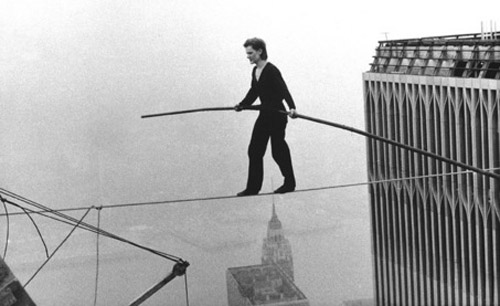

Linia, ta cienka jak westchnienie pijaka o świcie, rozciąga się nad otchłanią, która nie jest ani głęboka, ani płytka, lecz po prostu jest — jak czas, jak wspomnienie o zupie, którą jadło się w dzieciństwie, zanim jeszcze zupa stała się metaforą. Stawianie stopy przed stopą to akt wiary, bo przecież nikt nie wie, czy linia wytrzyma ciężar naszych wątpliwości, a przepaść pod nią to tylko echo własnego strachu, który wyłonił się z mgły, gdy ostatni raz spojrzeliśmy w lustro i nie rozpoznawszy się, uśmiechnęliśmy się do obcego. Balans to nie sztuka utrzymania równowagi, lecz sztuka zapominania, że równowaga to iluzja, którą wymyśliliśmy, by nie oszaleć, gdy ziemia pod nogami zaczyna oddychać.
A jednak upadek jest nieunikniony, bo przepaść to nie dół, lecz myśl o dole
Każdy krok to negocjacja z grawitacją, która nie jest siłą, lecz kaprysem, a linia to tylko umowa między tobą a wszechświatem, który akurat ma lepsze rzeczy do roboty, niż pilnować, czy nie spadniesz. Balansować to znaczy udawać, że się wie, co będzie za następnym krokiem, choć przecież za każdym razem to tylko nowa przepaść, nowa linia, nowy strach, który czai się w kieszeni jak zapomniany klucz. Upadek nie jest końcem, lecz początkiem opowieści, którą nikt nie będzie chciał słuchać, bo wszyscy wiedzą, że linia była zbyt cienka, a ty zbyt ciężki od własnych myśli, które przyczepiły się do ciebie jak mokre liście do butów jesienią.
I tak, w końcu, balans to nie sztuka chodzenia, lecz sztuka spadania z godnością
Gdy już spadniesz — a spadniesz, bo przepaść zawsze wygrywa — okaże się, że w dole nie ma nic, tylko kolejna linia, kolejna przepaść, kolejna szansa, by udawać, że się wie, co się robi. Balans to nie umiejętność, lecz rytuał, który powtarzamy, by udowodnić sobie, że jesteśmy czymś więcej niż tylko ciałem, które boi się wysokości. A może to wszystko tylko sen, w którym linia to nasze życie, a przepaść to czas, który nas pożera, krok po kroku, aż nie zostanie nic, prócz wspomnienia o tym, jak kiedyś balansowaliśmy nad czymś, co wydawało się ważne.
